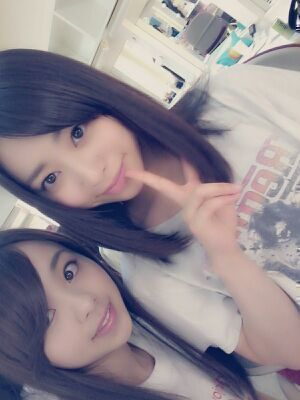

| 2013/06 12 Wed | 川村真洋 今読んでるのは 『植物図 鑑』あっ、そっちの植物図鑑ぢゃなくっ て こっちの植物図鑑！！ろって ぃ− |
ぁあ〜(*´ω｀*)
眩しいよょ〜
誰か助けて、エエエエ〜.
ど−も こんにちわ。
ろってぃ−♪です \(´∨`)/
皆さん、皆さん
乃木坂の『の』ラジオは
聞いてくださいましたかね？
聞いてくれたら嬉しいな...テヘテヘ
f(^ー^;
そんなこんなで、
昨日は まひろ、あすか、ちはる、あみ
で渋谷に行って参りました！
夕方頃から集まって
四人でカラオケさっ ☆！！
盛り上がったよ〜(*´ω｀*)
本当、動画載せたいよぉ〜
プリクラも載せたい ) ) )
晩御飯は、
またもや まひろは初めてのとこ
だったね、
四人で しゃぶしゃぶ。
たらふく食べたっちゃ！
お肉2人前ずつ食べたよ(´∇｀)
あ... ちはるは３人前かな？？
本当、面白いことがあり過ぎて
説明できんやっ ぐはは。笑

あ(;゜0゜)。これは
ねねねねね だね♪！
質問返しを そのつどできるように
ポケットに入るサイズのノートを
持ち歩くことにしたよ ！
ペペペっと質問をメモれる様にねん♪
☆さゆりん、ゆみと何のお仕事かな？
★実は、雑誌でもTVでもラジオでも
ないんだよねぇ〜 内緒よんよん♪
☆魚何食べたの？何が好き−？
★ホッケ //
魚大好きっ LOVELOVELOVE(〃ω〃)
ホッケも サバも ぶりも... 全部。
油がたっぷりのったのとか
もぅ、やばいよ(;゜∇゜)
☆髪染めた？
★染めてないけど
プリンシパルで毎日の様に
髪にダメージを与えてたせいで
すぐ 茶色くなっちまたよ
(/・∨・)/アチャ
☆大人っぽくなった？
★ぃゃ〜ん(*´∇｀*)
それほどでもぉ〜笑
ありがと,あなた好きよf(〃∨〃;ポリポリ
☆ウォーキングどの位やってんの？
★ランニングは１週間に1・2回とか？
まぁ、OFFの日しか行かれへんねん！
メンバーとは 月2とかで
たまにウォーキング行きますよ！
時期によってバラバラや(´∨`)
☆AKBの推しメンは誰かな？
★この方ー！！ ってゆぅ方は
いないんですけど、
ん〜、皆さん好きであります・ω・！
☆あの−ぅ。みさみさのも
一緒に推していいかな？
あっっっ！！！
ろってぃ−のことは神推しだよ！
★ん〜(*´ω｀*) そ〜だなぁ〜
今回だけだぞぉ〜マッタクゥゥ。
、、、
嘘です 嘘です(*^3(*^o^*)
承知しました！
神推ししてくださってると
知ってひと安心。
☆まりか緑好だから
羨ましかったんぢゃね？
★あ〜 ねっ(^_^)
確かに まりか緑好きやもんねぇ〜
) ) )
たまに衣装 交代したりしてねっ♪笑
☆その衣装 ライブで着てくれるのかな？
★もちろんもちろんさぁ〜
あったりめーぢゃーーん(ノ´∀｀*)
楽しみだ。トリャー
☆まいまいも肩だしグリーンだよね？
★おんっ ！
まいまい、れいか、まひろだね〜♪
☆6/10はろってぃ−の日？(6と10で)
★ぁああー ！！
そんなこと思いつかなかったよー☆笑
頭いいっすねん ( ☆∀☆)グヘヘ
ではでは、
そろそろ皆様は
『おやすみなさいませ』やでん
(〃∨〃)
おや(^3^)/みぃ〜〜ん.
ろってぃ−.